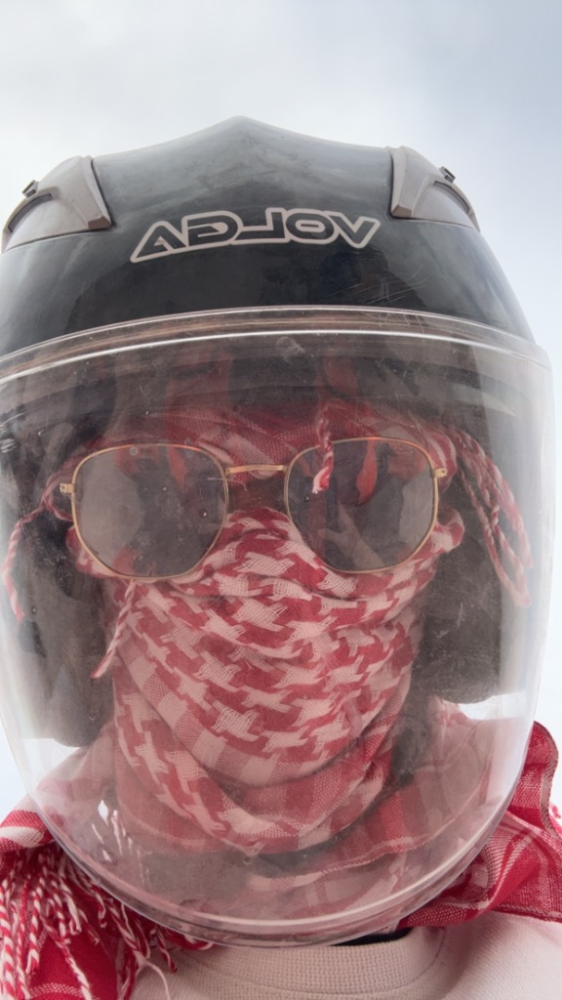

ENGINE 01 · 3D GRAPHICS
Repo ↗
Software Rasterizer
DRAG TO ORBIT
4×4 projection matrices, backface culling & Z-sorted shading with zero WebGL.
I’m Khaled Almasharqah, a third-year Software Engineering student at Heriot-Watt University. Bilingual in English and Arabic, shaped by high-volume customer operations at Vue Cinema, youth mentorship, and building LLMs, compilers, and engines from scratch with no black boxes.


4×4 projection matrices, backface culling & Z-sorted shading with zero WebGL.
Impulse restitution solver, velocity vectors & iterative Verlet pendulum constraints.
Inspect causal self-attention weights or step through compiled fact(6)=720 opcodes.
MatMul, LayerNorm, GELU, Softmax, and cross-entropy loss operations.0xCAFEBABE .class file serializer from scratch that constructs the JVM Constant Pool (UTF8, Class, NameAndType, Methodref), method descriptors, and Code attributes with zero external bytecode libraries.if_icmple, goto) and operand-stack depth calculation, verifying compiled .class binaries (including recursive factorial fact(6)=720) directly on the JDK 21 HotSpot VM.